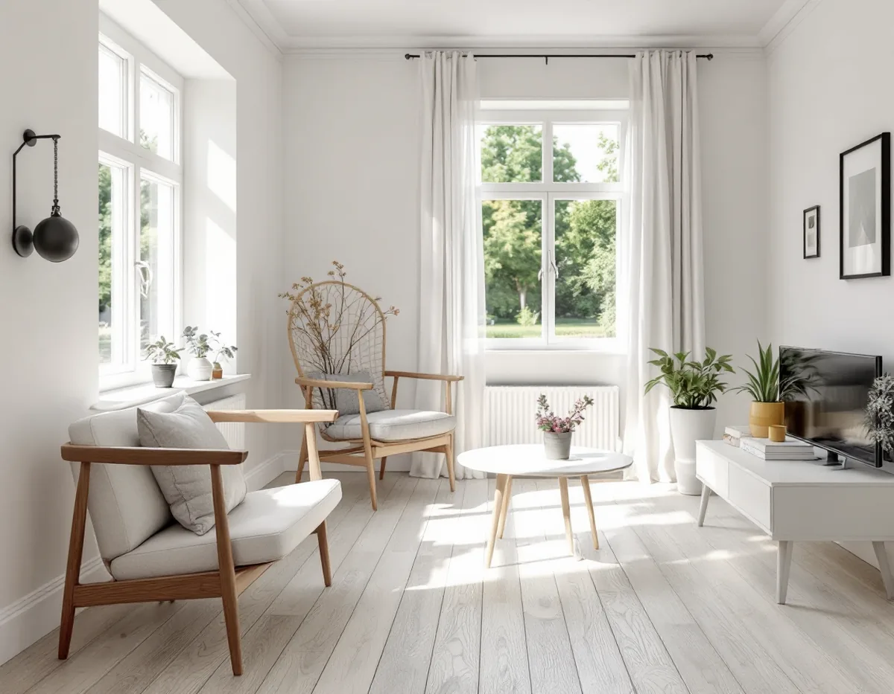
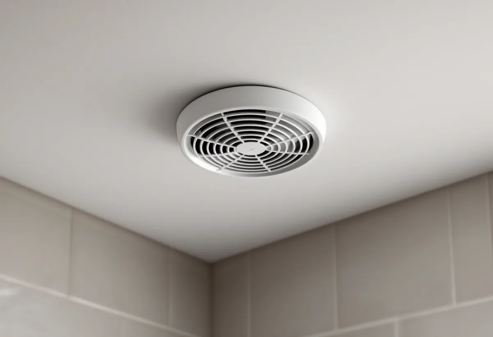
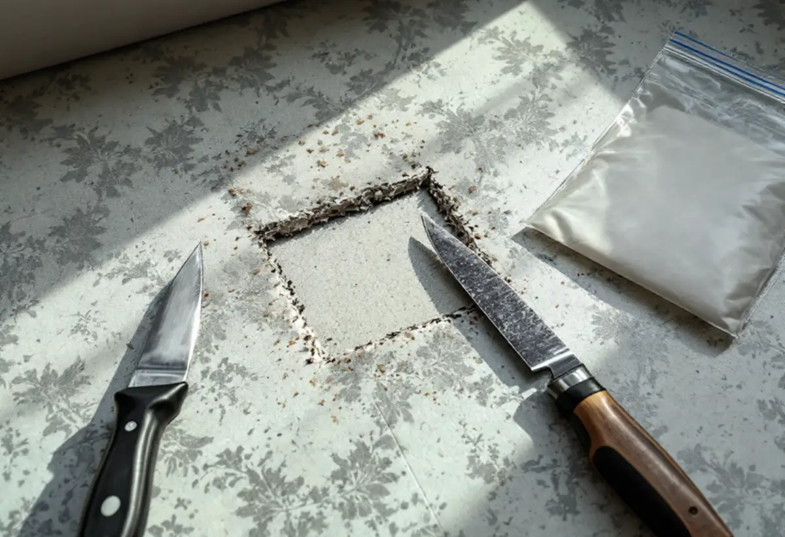

Platsbesök
Gratis besök där vi går igenom huset.
Ett radhus i Bredäng, Sätra, Skärholmen eller Vårberg som totalrenoveras har ofta ventilation, golv och ledningar från byggåret. Geal Entreprenad AB renoverar hela huset eller lägenheten och utgår från vad som byggdes på 1960-talet.

Stadens vägledning Varsam utveckling av småhus- och villaområden berättar att Bredäng började byggas 1962 som den första stadsdelen som planerades i stor skala, följd av Sätra. 1965 intensifierades bostadsbyggandet i hela landet, och en stor andel av miljonprogrammets bebyggelse var gruppbyggda småhus och radhus.
Stadens områdesfakta för 2025 räknar 1 976 småhus med äganderätt i stadsdelsområdet. Vägledningen beskriver att omsorgen om de enskilda bostädernas planlösningar var stor och att goda ljusförhållanden och funktionalitet var ledord, och det är ofta den planlösningen man utgår från vid en totalrenovering.

Stockholms stad beskriver frånluftsventilation som vanlig i hus byggda mellan 1961 och 1975. Centrala fläktar drar ut luften via don i kök, badrum och toalett, och tilluften tas in genom uteluftsdon i ytterväggarna och genom otätheter. När nya fönster sätts in och huset blir tätare behöver uteluften fortfarande hitta en väg in.
Installation eller väsentlig ändring av ventilationen kräver anmälan och startbesked, och aggregat som monteras utvändigt kan kräva bygglov. Vi tar reda på vilket system huset har innan kök och badrum ritas.
Boverket skriver att det främst är byggnader från åren 1940–1970 som innehåller asbest, och att det är stor sannolikhet att man stöter på asbest vid renovering, ombyggnad och rivning. Arbetsmiljöverket nämner bland annat eternitskivor, fix och fog, golvmaterial av plast och isolering.
En totalrenovering rör nästan alla de materialen. Därför börjar vi med en inventering och provtagning, och det som innehåller asbest saneras av ett företag med tillstånd innan väggar och golv rivs.
I flerbostadshusen i Skärholmens stadsdelsområde är de flesta lägenheter hyresrätter: omkring 3 500 hos allmännyttan och 6 500 hos privata hyresvärdar, mot 3 300 bostadsrätter. Stockholms stad skriver att du som hyr normalt inte får göra ändringar i bärande konstruktion, brandskydd, ventilation eller vatten och avlopp, och att du i en bostadsrätt behöver föreningens tillstånd.
I ett ägt radhus bestämmer du själv inomhus, men fasaden är en del av husgruppen. Bredäng är i stadens vägledning markerat som kulturhistoriskt värdefull miljö, så ska fönster eller fasad ändras kontrollerar vi klassningen. Mer om tjänsten finns under villarenovering.
Elsäkerhetsverket skriver att förändringar i den fasta elinstallationen, som ett nytt uttag i köket eller ledningar i väggarna, ska göras av ett registrerat elinstallationsföretag. Själv får man bara göra enklare saker, som att byta glödlampor eller en trasig proppsäkring.
Vid en totalrenovering av ett radhus från 1960-talet dras ofta ny el i hela huset. Vi samordnar elinstallatören med rivning och ny planlösning, så att ledningarna dras innan väggarna stängs.

Gratis besök där vi går igenom huset.
Provtagning av material som kan innehålla asbest.
Planlösning, ventilation, el och VVS.
Startbesked när stomme eller ventilation ändras.
Sanering, rivning och nya ledningar.
Golv, väggar, kök och badrum.
I ett småhus räknar Skatteverket bland annat rivning av väggar, ny planlösning, tilläggsisolering och kakel och klinker som rotarbete. Avdraget gäller arbetskostnaden, inte material och resor.
I en bostadsrätt gäller avdraget arbete innanför lägenhetens tak, väggar och golv som du ansvarar för enligt stadgarna. Avdraget är högst 30 procent och högst 50 000 kronor per person och år, och Geal drar det direkt på fakturan.
Hur mycket som rivs, om asbest måste saneras, ventilationens skick, om planlösningen ändras och vilken standard du väljer. Efter ett gratis platsbesök får du ett skriftligt kostnadsförslag.
Renovera hela huset eller lägenheten.
Villarenovering →Takbyte, takbesiktning och plåtarbeten.
Takläggare i Skärholmen →Radhus i grupper i Bredäng, Sätra och Vårberg.
Takrenovering i Skärholmen →Radhustomterna och grannarna.
Attefallshus i Skärholmen →Radhusen, källarplanet och golvbrunnen.
Badrumsrenovering i Skärholmen →Hela ombyggnaden av radhuset.
Byggföretag i Skärholmen →Radhusen från 60- och 70-tal.
Fasadmålning i Skärholmen →Fasader på radhus och kedjehus.
Fasadrenovering i Skärholmen →Radhus i sammanhållna husgrupper.
Fönsterbyte i Skärholmen →Miljonprogrammets radhus.
Fönsterrenovering i Skärholmen →Nya golv i radhus och lägenheter.
Golvläggare i Skärholmen →Parkett och lamellgolv från 1960-talet.
Golvslipning i Skärholmen →1960-talskök, bostadsrätt och radhus.
Köksrenovering i Skärholmen →Lägenheter, trapphus och radhus.
Målare i Skärholmen →Rännor och stuprör i sluttningarna.
Plåtslagare i Skärholmen →Altan, plank och förråd vid radhuset.
Snickare i Skärholmen →Egna radhus i Sätra, Bredäng och Vårberg.
Takbyte i Skärholmen →Ny tapet i hyresrätt och bostadsrätt.
Tapetsering i Skärholmen →Radhusen, uterum och skärmtak.
Tillbyggnad i Skärholmen →